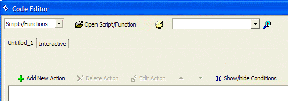
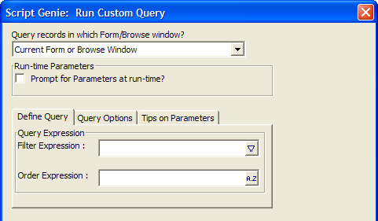
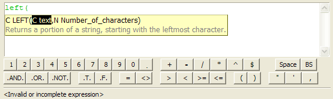

Branching Examples
Branching is a way for a script to follow different paths depending on the outcome of a conditional test. You have already seen how to make conditional Actions in a script. This lesson covers several different techniques for enabling branching in your Action Scripts. Some examples build on what you already know about making Actions conditional. Other examples use different techniques. If you have dot done so already, open the Learning Action Scripting database located in the Learning Action Scripting folder under your main Alpha Five program folder.
This example uses a dialog box to let the user select the direction the script will take. The dialog box is the "Branch" form, which should be in the Forms tab of the Control Panel. You will create a global script that launches this form as a dialog box, and then, depending on which button the user presses, will run a script called "BlueMessage", "RedMessage", or "GreenMessage" (these are pre-written scripts and should be listed under the Code tab of the Control Panel ). At the end of the example, you will
To start the lesson:
Display the Code tab of the Control Panel.
Click the New button and select Action Script.
The Code Editor opens displaying an untitled Action Script.
Click the Add New Action button.
Select the "Dialog Boxes" category and the "Open a Form as a Dialog Box" Action.
Click OK.
The Script Genie appears. Select "Branch" in the Form Name field.
The Dialog Box Name field needs a unique name to identify this dialog box in the script. Enter "brnchdlg".
When entering the name, some additional prompts on the dialog appear. The dialog lists the names of the buttons on the "Branch" form. as you will recall, this form had four buttons, Red, Blue, Green and Cancel. Alpha Five allows you to associate some type of Action with each button.
Start by associating an Action with the "Blue" button.
Select "Blue" as the button.
In the combo box under the Then... prompt, change the selection from "Do nothing" to "Play a script".
In the Named... combo box, select "BlueMessage" as the name of the script.
 Note : What you have
done here is say that when the user clicks the "Blue" button
(which will close the dialog box), the "BlueMessage" script
will play. You have NOT assigned any scripts to the OnPush
event for the "Blue" button.
Note : What you have
done here is say that when the user clicks the "Blue" button
(which will close the dialog box), the "BlueMessage" script
will play. You have NOT assigned any scripts to the OnPush
event for the "Blue" button.
Repeat the previous steps, selecting "Green" and "GreenMessage". Your screen should look like this:
Finally, repeat the previous steps selecting "Red" and "RedMessage". Your screen should look like this:
Click Next > and Finish to complete the Genie. The Code Editor shows the Action in your script.
Click the Save button and name the action "branch_form_dialog".
Click OK.
Close the Code Editor by closing the window.
In the Control Panel, double-click "branch_form_dialog".
The form will open as a dialog box (which means that you cannot click on any other window in Alpha Five until you have closed the form).
Click the Green button. The "GreenMessage" script plays and shows this dialog box:
As mentioned at the start of this lesson, you need to follow a special procedure in order to make a form behave like a dialog box.
Navigate to the Forms tab on the Control Panel.
Select the "Branch" form and click the Design button on the toolbar.
Click the Red button.
Right-click and select Properties from the right-click menu. The Button Properties dialog appears.
The important thing to note is the Object Name. Normally when you place a button on a form, Alpha Five creates a default Object Name, which is typically "BUTTONx" where x is a unique number. We have changed the Object Name to one more meaningful. as you may recall, when you used the Genie a few steps ago, it listed the names of the buttons on the form. If you had not given your buttons meaningful Object Names, this Genie screen would be quite confusing.
Click Cancel to close the Button Properties window.
Now look at the events associated with each of these buttons. Right-click the Red button and select Events > OnPush. as you can see, there is an Action Script associated with the button's OnPush event. The script does only one thing; it closes the current form.

In the above example, the branching mechanism was "embedded" into the "Open Form as a Dialog Box" Action. Our Action Script had only one Action in it, even though it branched in three possible different directions (red, green, and blue). The next example will show you a slightly different approach for achieving the same result.
A Different Approach to Using Forms as Dialog Boxes
Open the Code Editor and create a new Action Script.

Click the Add New Action button and select the "Open a Form as a Dialog Box Action".
Click OK.
Select "Branch" as the form name and enter "branchdialog" as the dialog box name. This time you will NOT define any actions for the different Red, Green, and Blue buttons.
Click Next > and Finish to close the Genie. The Code Editor looks like this.
Now to add the next action to the editor you are going to choose an action that plays an existing global script. Click the Add New Action button. Select the "Scripts" category and the "Run a Script" Action.
Click OK.
The Run a Script Genie appears. Select "BlueMessage" as the script. Click Next > and Finish.
The Code Editor looks like this:
Now we need to make this second Action conditional. Click the Show/hide Conditions button and enter field values as shown below.
The key point to understand about the "Open a Form as a Dialog" Action is that when you close the dialog, it automatically sets "flag" variables. The flag variable names are created automatically based on button names and the dialog box name you assign. This dialog box will create flag variables called branchdialog_blue, branchdialog_green, and branchdialog_red. When the dialog is closed, only ONE of these flag variables will be set to .T. (the others will all be .F.). The "Run a Script" Action will be executed if the branchdialog_blue flag variable is .T. (which it will be if the "Blue" button on the form is pressed to close the dialog).
Now add two more Actions to your script. One should run the RedMessage script if branchdialog_red is .T., and the other should run the GreenMessage script if branchdialog_green is .T. .
Save the script, naming it "branch_form_dialog2", and close the Code Editor.
On the Control Panel, double-click the script to test it. You will see the script operates exactly like branch_form_dialog. Picture
{kind=link}
Using a Radio Button Dialog Box for a Branching Script
What if you want a "quick and dirty" branching script and designing a special dialog form is too much work? A good way would be to use a radio button dialog box.
This lesson shows how to achieve the same branching as in the above example.
Navigate to the Code tab on the Control Panel, click the New button and create a new Action Script.
Click the Add New Action button.
Select the "Dialog Boxes" category and the "Prompt Using Radio Button Dialog" Action.
Click OK. The Genie appears.
Enter "Select Color" in the Dialog title field.
Enter a list of choices that you want to appear on the dialog box in the Choices text box. Enter one choice per line.
Enter a default value for the list.
Enter "vcColor" as the Result variable name. This variable stores the users selection.

Click Next > and Finish to complete the Genie.
Now add a another action. Select the "Scripts" category and the "Run a Script" action.
When defining this action, choose the RedMessage script. (The steps are identical to those you followed in the previous example.)
Make the script conditional, and specify the condition as shown below.
Add two more "Run a Script" Actions, one for GreenMessage and another for BlueMessage.
Save your script, naming it radio_dialog, and close the Code Editor.
Test your script by double-clicking on it in the Code tab of the Control Panel.
You have just created yet another way to branch in your script.
In this example, you will put a multi-state button on a form for sub-selecting records. You will create a form that looks like this:
 Note : The button object
on the left is referred to as a Multi-state
button because it is just a single object (not 26 individual button
objects), and the button can have 26 different states corresponding to
each letter being depressed.
Note : The button object
on the left is referred to as a Multi-state
button because it is just a single object (not 26 individual button
objects), and the button can have 26 different states corresponding to
each letter being depressed.
Start with the default form for the Customer table. Click the Tables/Sets tab in the Control Panel. Right-click the "customer" table and select Open Default Form.
Click the Design Form button to enter Design Mode. Picture
{kind=link}
Now you need to shift all the fields to the right to make room for the embedded browse. Make sure the Toolbox is visible. If not, toggle it on using the View > Toolbox command.
Right click on the top margin above the field labels and drag them right.
Now put an embedded browse on the form. To do this:
Click the Browse Object tool
 on the Toolbox.
on the Toolbox.Click and draw the embedded browse on the form. When you release the mouse button, the Browse Object dialog box appears, allowing you to select the columns you want to appear in the browse.
Choose only the "Lastname" field.
You need a variable to accept the value of the Multi-state button. Click the Add Variable button
 on the Control
Panel .
on the Control
Panel .The Variable Definition dialog box appears. Here you can specify the variable name and its "scope".
 Note : A variable's
scope determines whether other areas of Alpha Five can see the variable.
A full discussion of this concept is beyond the scope of this tutorial.
More information on variable scope is available.
Note : A variable's
scope determines whether other areas of Alpha Five can see the variable.
A full discussion of this concept is beyond the scope of this tutorial.
More information on variable scope is available.
Select "Session" for Level, enter "vcLetter" under the Name prompt, and select "Character" for Type. The vc prefix reminds you that the variable is a character variable.
Click OK to close the Variable Definition dialog box.
Next, put the Multi-state button on the form. Click the Multi-state Button tool on the Toolbox
 .
.Click and draw the multi-state button on the form. (Refer to the first picture in this lesson showing the completed form for a rough idea of where and how large to draw the multi-state button.) as soon as you release the mouse button the following dialog appears:
This dialog box lets you select the field or variable whose value is set when a button in the multi-state button is pressed. Select "Var" and "vcLetter.
Click OK.
This binds the multi-state button to the vcLetter variable. This means that when you click a button on the multi-state button, the value in the vcLetter variable will be set. Next, you need to define the choices for the multi-state button. Right-click on the multi-state button object and select Properties.
The Field Properties dialog box appears. Display the Choices tab.
In the Choices for control are list click
 and select "User
defined".
and select "User
defined".The choices for the multi-state button are the letters of the alphabet. Enter the letters A through Z in the text box, with one letter per line. When you are done, your screen should look like this:
Click OK to close the dialog box. Your multi-state button should now have 26 buttons on it, labeled A through Z.
Now you need to create the script that will select the appropriate records when one of the buttons is pressed. You will attach a script to the OnChange event of the multi-state button, because you want the selection of records to change every time a different button is depressed. Right-click the multi-state button and select Events > OnChange.
If Alpha Five prompts you for a method, select "Action Script".
 Note : If Alpha Five
does not prompt for the method, it is because you have set a preference
to always use either Xbasic or Action Scripting as your preferred
method for creating new Event scripts. Go to View >
Settings > Preferences > New Scripts > Prompt for Method
to change the setting. If the Code Editor opens,
and you are in Xbasic mode, and not in Action Scripting mode, select the
Code > Switch to Action Scripting command.
Note : If Alpha Five
does not prompt for the method, it is because you have set a preference
to always use either Xbasic or Action Scripting as your preferred
method for creating new Event scripts. Go to View >
Settings > Preferences > New Scripts > Prompt for Method
to change the setting. If the Code Editor opens,
and you are in Xbasic mode, and not in Action Scripting mode, select the
Code > Switch to Action Scripting command.
The Code Editor appears. Note the label on the tab. The first part, ":Untitled", indicates the name of the form for which the event is being defined. The form's name will replace "Untitled" when you save the script. The second part, "MULSTBTN1" is the name of the object on the form for which the event is being defined. "MULSTBTN1" is an arbitrary name that Alpha Five automatically assigned to the multi-state button when you first created it. The last part of the name, "OnChange" is the event for which the script is being created.
Click the Add New Action button.
Select the "Query" category and the "Run Custom Query" Action.
Click OK. The Run Custom Query Genie appears.

You will be running a query on the current form, so leave the selection in the first combo box set to "Current Form or Browse Window".
Next you need to specify the filter expression for the query. Click the Filter Builder button
 . The Filter Builder
opens.
. The Filter Builder
opens.
You want to search for all records where the first character of the Lastname field matches the button pressed on the multi-state button (and hence, the value in the vcLetter variable). In order to specify this filter expression, you have to enter an expression for the field to search. Scroll the list of field names until you reach the last entry, "
".
Select "
". The Expression Builder opens. The LEFT() function returns characters from the left side of a string value. Type "left(" in the Expression Builder.

Click the Insert button to pick the field name from a list.
Click Insert to insert the Lastname field into the expression. Complete the expression as shown below:
This expression returns one character from the left of the field. Click OK to close the Expression Builder. The Filter Builder now has a new entry in the list of fields in which you can search. (It the expression that you just defined).
Select "is equal to" from the Operator column shows.
In the final column, enter the value for which Alpha Five searches. Click the up arrow for help entering the value. The Value dialog box opens, where you can select exactly what Alpha Five should search for.
We want to search for the value in a variable. Click the Select Variable button.
The Select Variable dialog box appears, showing the different categories of variables from which you can choose. Select the "Session" category. (Remember earlier in this lesson you defined the vcLetter variable scope as "Session".)
Select "vcLetter".
Click OK.
The Filter Builder now looks like this: Picture
{kind=link}
 Note : The variable
name is shown in the Filter Builder with a leading
= sign. This indicates to Alpha Five that the value that you want to search
for is an expression, and not a constant value, such as "Smith."
The "Var->" prefix tells Alpha Five that vcLetter
is a variable.
Note : The variable
name is shown in the Filter Builder with a leading
= sign. This indicates to Alpha Five that the value that you want to search
for is an expression, and not a constant value, such as "Smith."
The "Var->" prefix tells Alpha Five that vcLetter
is a variable.
Click OK to close the Filter Builder. The Run Custom Query Genie now looks like this:
Click Next > to move to the next step in the Genie.
Enter an optional comment at the prompt to describe the action.

Click Finish to complete the action. Your action script now looks like this:
Click the Save button on the toolbar to save the script.
Click anywhere on the form to give it focus.
Click the Save button to save the form.
Click the Form View button to switch from Design Mode to View Mode.
Now, test the form. Click the A button on the form. You should see only records starting with "A."
Try some of the other buttons, and then click on the T button.
Unless you have been adding records, there should not be any records that start with "T." Therefore, Alpha Five displays no records, and switches to data entry mode so you can enter a new record.
 Note : Alpha Five will
only switch to data entry mode if you have set your global Data Entry
mode to "modeless." This is set using the View
> Settings command. If you are not
now in data entry mode, then do not worry. Its not central to this lesson.
Note : Alpha Five will
only switch to data entry mode if you have set your global Data Entry
mode to "modeless." This is set using the View
> Settings command. If you are not
now in data entry mode, then do not worry. Its not central to this lesson.
This is probably not the kind of behavior you want from your script. It would be preferable if a message box came up telling you there were no records in the query. In order to decide whether or not to display this message, you need to set a variable to the number of records in the current query, and then test this variable. If it is 0, then you display the message box.
Click the Design button to switch back to Design Mode.
Right-click the multi-state button and select Events > OnChange. Note that "OnChange" is the only bold event in the list. This is because OnChange is the only event for which a script has been defined.
To create a variable that will contain the number of records in the current query, select the "Variables" category and the "Set variable(s) to Form/Browse window info" Action and click OK.
The Genie appears. You want information about the current window, so leave the combo box as is.
Click the Add button to select the category of information that you are interested in.
The Add Variable dialog box appears. There are quite a few different items on which you can collect information. The first choice, "Number of records currently selected" is the one you want. Click OK to select this entry.
At the prompt, "Store property in a variable called," specify the name of the variable that will contain the number of records currently selected. Enter "vnRecords_selected" as the variable name. The Genie screen should now look like this:
Click Next > and Finish to complete the action. Now you need to add the next action, which displays the message box.
Click the Add New Action button.
Select the "Dialog Boxes" category and the "Display a Message Box" Action.

Click Next > to accept the default choices on the first page of the Genie. Picture
{kind=link}
At the next page of the Genie, fill in the selections. Under Title and Message place "Notice." in the top field and "No records selected. Showing all records." in the bottom field.
Click Next > to move to the next page of the Genie.
Enter "NoRecords" for the message box name.
Click Next > and Finish to complete the Action. The Code Editor should now look like this:
Your script now has three Actions and the tab label has an asterisk, indicating that the script has not been saved. Click the Save button to save the script.
IMPORTANT NOTE : At this point the script has been saved, but the form itself has not been saved. So if you exit from Alpha Five without saving the form, your changes will be lost.
You want to make the message box conditional on there being no records in the current query.
Select the "Display a Message Box" Action, and then check the Action is conditional check box.
Select the "Condition Expression is True" option at the Execute Action if prompt.
At the Expression prompt, click the xy button to open the Expression Builder.
Enter "var->vnRecords_selected = 0" in the text box.
TIP : Instead of typing the variable name, you can press F6 and select it from the resulting list.
The Expression Builder should look like this.
Click OK to close the Expression Builder.
Now you want to add one more Action to the script. If there are no records in the current selection, then you want to select all the records in the table. You do this by setting the form to record number order. Click the Add New Action button.
Select the "Index/Sort" category and the "Set Record Number Order " Action.
The Genie appears. You want to set the record number order for the current form. Click Next > and Finish to complete the Action.
The Code Editor should now look like this:
Select the last Action in the script and check the Action is conditional check box.
Check the Same as Previous condition check box. The Code Editor should now look like this:
Save the script and save the form.
Run the form and test out the buttons. Click the T button and you should now get the new message box.